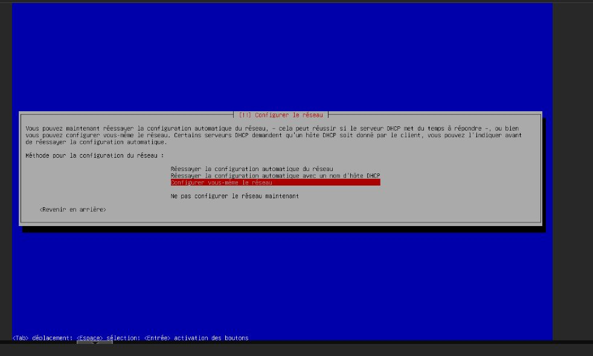

Contexte et objectif
Sans outil central, une tentative d'intrusion sur un poste passe inaperçue : les traces restent dans les journaux de chaque machine. Un SIEM (Security Information and Event Management) rassemble ces journaux, les compare à des règles de détection et lève des alertes.
Objectifs du TP :
- préparer un serveur Linux dédié à Wazuh ;
- installer la plateforme Wazuh 4.14 en mode tout-en-un ;
- raccorder des machines Windows et Linux grâce à des agents ;
- vérifier le fonctionnement en provoquant une alerte.
Architecture
Cliquez sur un élément pour voir son rôle et les flux réseau qu'il utilise.
Serveur Wazuh (tout-en-un)
| Composant | Rôle |
|---|---|
| Indexer | Stocke et indexe les alertes (API sur 9200/tcp, en local) |
| Manager | Reçoit les événements des agents et applique les règles de détection (API REST 55000/tcp) |
| Dashboard | Interface web d'administration et de visualisation (443/tcp) |
VM dimensionnée selon la doc Wazuh pour 1 à 25 agents : 4 vCPU, 8 Go de RAM, 50 Go de disque.
Agent Windows
Service installé sur le poste surveillé. Il lit les journaux d'événements Windows et les envoie chiffrés au manager sur 1514/tcp. L'enrôlement initial passe par 1515/tcp.
Agent Linux
Même principe : il surveille auth.log, l'intégrité des fichiers et les processus, puis remonte les événements au manager.
Accès administrateur
Le dashboard est consulté en HTTPS sur https://<IP_SERVEUR>. En sortie, le serveur doit joindre packages.wazuh.com et cti.wazuh.com (443/tcp) pour l'installation et les flux de vulnérabilités.
Étapes réalisées
- Créer la VM4 vCPU, 8 Go de RAM, 50 Go de disque, carte réseau joignable par les autres machines du TP.
- Installer Debian en IP fixeLe DHCP n'a pas répondu pendant l'installation. J'ai choisi « Configurer vous-même le réseau » :
10.2.0.26, passerelle10.2.0.1, DNS1.1.1.1. Pour un serveur que des agents doivent joindre, une IP fixe est de toute façon préférable. - Installation minimalePas d'environnement graphique pour économiser les ressources. Seuls le serveur SSH et les utilitaires usuels sont installés. Le compte root est laissé sans mot de passe pour passer par
sudo. - Préparer le système puis lancer l'installation de WazuhLe script officiel installe et configure les trois composants.

# Vérifier le réseau après le premier démarrage $ ip a $ ping -c 3 deb.debian.org # Mettre le système à jour et installer curl $ sudo apt update && sudo apt upgrade -y $ sudo apt install -y curl # Installer Wazuh 4.14 en mode tout-en-un (-a) $ curl -sO https://packages.wazuh.com/4.14/wazuh-install.sh $ sudo bash ./wazuh-install.sh -a
Le script affiche le mot de passe admin à la fin. Tous les mots de passe générés sont aussi gardés dans l'archive wazuh-install-files.tar. Il faut la stocker en lieu sûr et ne jamais la laisser traîner sur le serveur.
Suite du projet
Les prochaines étapes, prévues dans le TP :
- déployer l'agent sur une VM Windows et une VM Linux, puis vérifier qu'elles apparaissent « actives » dans le dashboard ;
- provoquer plusieurs connexions SSH ratées pour générer une alerte de type brute force ;
- bloquer les mises à jour automatiques des paquets Wazuh, pour garder le manager et les agents dans la même version.
Cette page sera complétée avec les captures du dashboard et de la première alerte.
Bilan
Compétences mobilisées
- Dimensionnement d'un serveur selon la documentation éditeur
- Installation Debian minimale en IP fixe
- Identification des flux réseau à ouvrir
- Compréhension de l'architecture d'un SIEM
Lien avec mes autres projets
Wazuh complète le durcissement Linux : durcir réduit les attaques possibles, superviser permet de voir celles qui sont tentées.